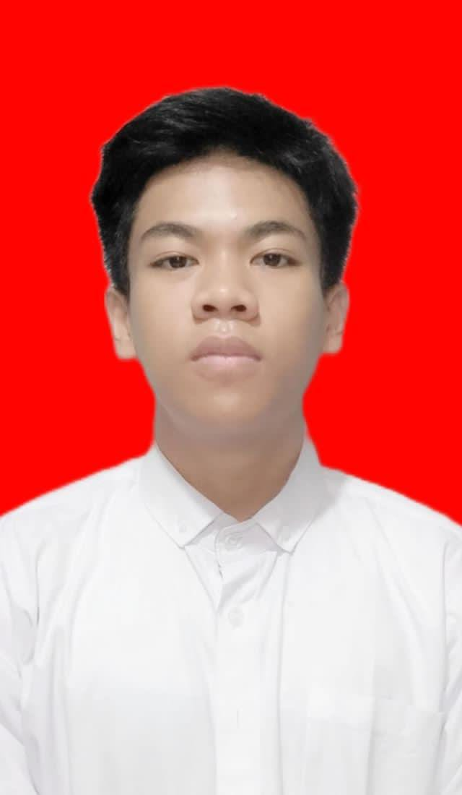
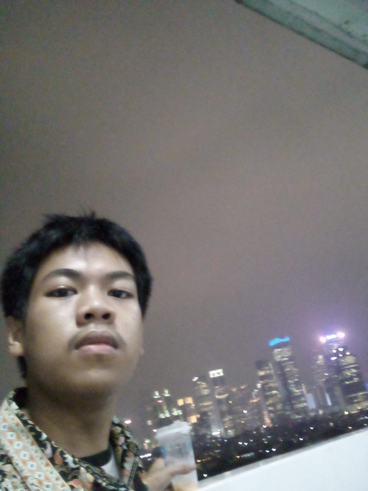

Rafi Febrian Suprapto Jakarta, 15 Februari 2006 Rafi Febrian Suprapto adalah seorang mahasiswa yang sedang menempuh pendidikan Sarjana Bisnis Digital di Universitas Negeri Jakarta. Lahir di Jakarta pada 15 Februari 2006, Rafi sejak dini menunjukkan ketertarikan yang besar terhadap dunia teknologi dan bisnis digital. Sebelum melanjutkan pendidikan tinggi, Rafi menempuh pendidikan di SMA Cindera Mata dengan jurusan Matematika dan Ilmu Pengetahuan Alam (MIPA), yang membentuk dasar pemikirannya dalam bidang logika dan analisis. Keterampilan ini sangat mendukung perjalanannya di bidang bisnis digital yang terus berkembang pesat. Selain fokus pada studinya, Rafi memiliki berbagai kegiatan rutin yang menunjang pengembangan diri. Di antaranya adalah mengemudi mobil, bermain keyboard, dan mendalami dunia investasi. Kegiatan-kegiatan ini menunjukkan minatnya yang luas, tidak hanya dalam bidang akademis, tetapi juga dalam hobi kreatif dan keuangan. Saat ini, Rafi tinggal di Jakarta dan terus berusaha mengembangkan dirinya dalam dunia bisnis dan teknologi. Dengan passion yang besar untuk belajar dan beradaptasi dengan perkembangan zaman, ia berambisi untuk membawa inovasi dan solusi di bidang digital yang dapat memberikan dampak positif bagi masyarakat.

Rafi mulai mengenal dunia investasi sejak SMP, ketika tren investasi mulai berkembang dan banyak orang yang tertarik untuk menanamkan modal guna mendapatkan keuntungan melalui capital gain dan dividen, terutama di pasar saham. Ia tertarik dengan potensi keuntungan yang ditawarkan oleh pasar saham dan memutuskan untuk memulai perjalanan investasinya dengan memilih Bank Central Asia Tbk (BCA) sebagai saham pertamanya. Rafi merasa tertantang dan juga terinspirasi oleh kisah sukses para investor yang berhasil meraih keuntungan besar. Ia mulai mempelajari seluk-beluk pasar saham, termasuk analisis fundamental dan teknikal, serta bagaimana cara membaca laporan keuangan dan memantau pergerakan harga saham. Setiap kali ada peluang, Rafi dengan cermat melakukan riset, membaca berita pasar, dan mengikuti perkembangan ekonomi. Seiring berjalannya waktu, investasi menjadi lebih dari sekadar hobi bagi Rafi. Ia mulai mendiversifikasi portofolionya, berinvestasi di saham-saham lain. Selain itu, Rafi juga mulai berbagi pengetahuan yang ia peroleh kepada teman-temannya, sering kali mengadakan diskusi tentang pasar saham dan investasi. Hobi ini tidak hanya memberinya keuntungan finansial, tetapi juga memperkaya wawasan Rafi tentang ekonomi, keuangan, dan strategi bisnis. Bagi Rafi, dunia investasi bukan hanya tentang mengejar profit, tetapi juga tentang bagaimana memahami pasar dan membuat keputusan yang bijak dalam mengelola keuangan pribadi.
Rafi mulai mengenal dunia musik, khususnya keyboard dan piano, sejak kelas 12 SMA. Ketertarikannya bermula dari rasa ingin tahu yang mendalam tentang alat musik dan keinginan untuk bisa memainkan lagu-lagu favoritnya. Pada awalnya, Rafi belajar secara otodidak, dengan bantuan kakeknya yang seorang musisi amatir. Kakeknya sering mengajarkan teknik dasar dan beberapa lagu sederhana, memberikan Rafi fondasi yang kuat untuk memulai. Selain belajar dengan kakeknya, Rafi juga mendapat banyak bantuan dari teman-temannya yang sudah lebih dulu menguasai alat musik tersebut. Mereka sering mengadakan sesi latihan bersama, berbagi tips, dan saling memberi masukan. Rafi merasa senang bisa belajar dalam suasana yang mendukung, karena teman-temannya sangat antusias membantu, bahkan sering kali membahas teori musik yang lebih mendalam. Namun, selain belajar langsung dari orang-orang terdekatnya, Rafi juga memanfaatkan kemajuan teknologi. Ia mulai mencari tutorial di YouTube untuk mempelajari teknik bermain keyboard dan piano secara lebih mandiri. Video-video tersebut membantunya memahami berbagai jenis musik, dari yang klasik hingga yang lebih modern. Ia belajar bagaimana membaca notasi musik, bermain dengan tempo, serta memadukan melodi dan harmoni dengan cara yang lebih kompleks.
Rafi sudah mengenal dunia otomotif sejak kecil, dan ketertarikannya semakin berkembang melalui berbagai pengalaman yang berhubungan dengan mobil dan balapan. Sejak kecil, Rafi sering bermain game racing di konsol PlayStation 2, yang menjadi jendela pertama baginya untuk mengenal dunia otomotif secara lebih mendalam. Game-game seperti *Need for Speed Most Wanted*, *Need for Speed Underground 1 dan 2*, serta *Need for Speed Carbon* sangat membekas dalam ingatannya. Dalam game-game tersebut, Rafi tidak hanya menikmati kecepatan dan adrenalin balapan, tetapi juga mulai tertarik dengan berbagai jenis mobil yang bisa dikendarai, serta modifikasi yang bisa dilakukan pada mobil-mobil tersebut. Fitur modifikasi yang memungkinkan pemain untuk mengubah tampilan mobil, meningkatkan performa mesin, dan memilih berbagai aksesoris menjadi salah satu aspek yang paling ia nikmati. Ia mulai mempelajari berbagai merek mobil, spesifikasi teknis, dan perbedaan antara mobil-mobil balap yang ada di game tersebut. Seiring berjalannya waktu, kecintaannya terhadap dunia otomotif semakin berkembang. Rafi mulai meluangkan waktu untuk membaca majalah otomotif, menonton video di YouTube tentang mobil, dan mengikuti berita seputar perkembangan teknologi otomotif. Ia juga menjadi tertarik dengan berbagai jenis mobil, dari mobil sport hingga mobil klasik, dan sering mengikuti berbagai acara otomotif, baik yang berskala kecil maupun besar, di mana ia bisa melihat langsung mobil-mobil impiannya. Rafi tidak hanya puas dengan sekadar bermain game atau menonton balapan, tetapi ia mulai merasakan hasrat untuk memahami lebih dalam mengenai mekanisme mobil, cara kerja mesin, dan teknologi di balik performa tinggi mobil. Ketertarikannya bahkan mendorongnya untuk belajar lebih banyak tentang modifikasi mobil dan cara merawat kendaraan dengan baik. Ia berangan-angan suatu hari nanti bisa memiliki mobil impian dan mungkin juga melakukan beberapa modifikasi sendiri, sesuai dengan keinginannya. Otomotif bagi Rafi bukan sekadar hobi, melainkan juga sebuah dunia yang penuh tantangan dan inovasi. Meskipun ia belum memiliki mobil sendiri saat itu, ia terus mengasah pengetahuan tentang dunia otomotif, dari sejarah mobil hingga teknologi terbaru yang diterapkan pada mobil masa kini. Rafi merasa ada kepuasan tersendiri ketika bisa memahami hal-hal teknis yang sebelumnya hanya ia lihat di layar game atau di televisi, dan ia berharap bisa terus mendalami dunia otomotif hingga suatu saat bisa menjadi bagian dari industri ini.